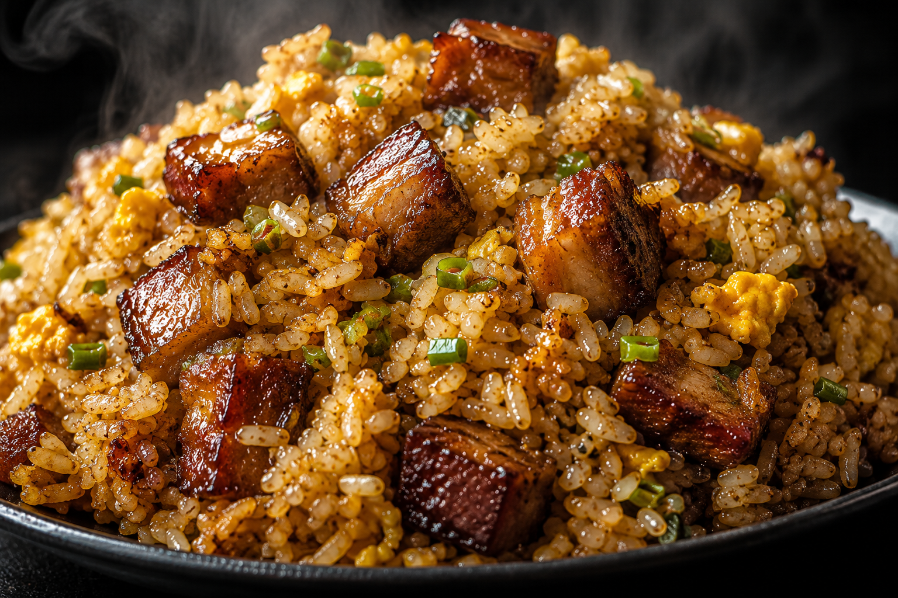
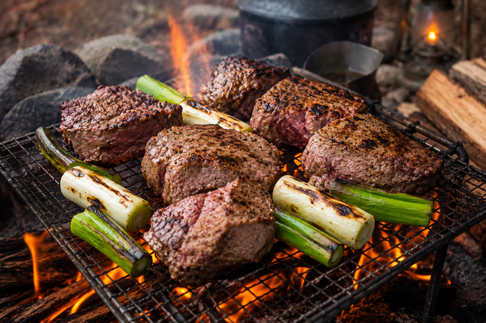

開けてそのまま食べるのも最高だが、少しの手間を加えるだけでLIFE MEATは化ける。
キャンプ飯から、深夜の背徳的な男飯まで。
本能の赴くままに、肉を喰らい尽くすための特製レシピを公開。
キャンプ飯から、深夜の背徳的な男飯まで。
本能の赴くままに、肉を喰らい尽くすための特製レシピを公開。

男飯 / 10MIN
究極の肉まみれ
究極の肉まみれ
野性チャーハン
深夜の胃袋を満たす、暴力的なまでの旨味。プレーンの肉汁を米の一粒一粒に吸わせることで、最強のジャンクフードが完成する。
MATERIALS
- 白ご飯どんぶり1杯
- 卵2個
- 刻みネギたっぷり
- ごま油大さじ1
- 醤油少々
 使用フレーバー：PLAIN (1缶)
使用フレーバー：PLAIN (1缶)
HOW TO COOK
- 熱したフライパンにごま油をひき、溶き卵を流し入れて半熟の状態で一旦取り出す。
- そのままのフライパンにLIFE MEAT（プレーン）を汁ごと全て投入し、中火で炒める。肉の脂が溶け出してきたら白ご飯を投入する。
- 米を切るように強火で炒め、肉の旨味を米全体にコーティングさせる。
- 半熟卵と刻みネギを戻し入れ、サッと炒め合わせる。最後に鍋肌から醤油を回し入れ、香ばしい匂いが立ったら完成。
酒のツマミ / 5MIN
地獄のチーズ・
地獄のチーズ・
チリナチョス
ビールを無限に消費する、背徳のツマミ。スパイシーの刺激と濃厚なチーズの海に溺れろ。
MATERIALS
- トルティーヤチップス1袋
- とろけるチーズ100g
- ハラペーニョ適量
- 黒こしょう少々
 使用フレーバー：SPICY (1缶)
使用フレーバー：SPICY (1缶)
HOW TO COOK
- 耐熱皿にトルティーヤチップスを敷き詰める。
- LIFE MEAT（スパイシー）をフォークなどで粗くほぐし、チップスの上に豪快に乗せる。
- 上からとろけるチーズを山盛りに乗せ、オーブントースターでチーズに焦げ目がつくまで（約3〜5分）焼く。
- 仕上げに黒こしょうを振りかけ、お好みでハラペーニョをトッピングすれば完成。熱いうちにビールと一緒に流し込め。

キャンプ飯 / 15MIN
豪快！
豪快！
山賊焼き風グリル
自然の中で肉を喰らう本能を満たす。BARBECUEの濃厚なソースが焦げる香りで、周囲のキャンパーの視線を独占しろ。
MATERIALS
- 太ネギ1本
- きのこ類（しいたけ等）適量
- アウトドア用スパイス少々
 使用フレーバー：BARBECUE (1缶)
使用フレーバー：BARBECUE (1缶)
HOW TO COOK
- 太ネギは5cm幅のぶつ切りにする。
- 鉄板（またはアルミホイルで作った簡易皿）にネギときのこを並べ、軽く火を通す。
- 野菜の上にLIFE MEAT（バーベキュー）をドカッと乗せ、缶に残った甘辛ソースも全てかける。
- ソースがグツグツと沸き立ち、肉の表面に少し焦げ目がつくまで炭火で炙る。仕上げにアウトドアスパイスを振りかければ完成。